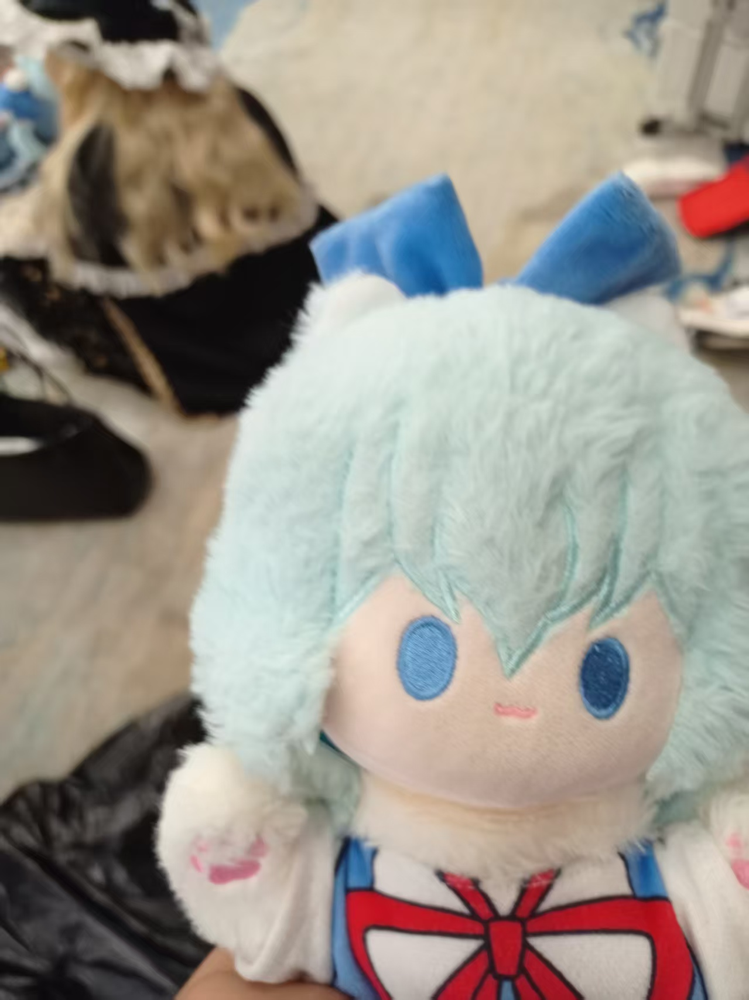

“欢迎来到⑨的世界”
教会群聊：869308557
什么是⑨教
“⑨教”是“baka教”的别称，建立于2024年11月20日。这是一个专为东方Project中可爱又迷人的角色——琪露诺而生的独特粉丝团体，我们伪装成教派的形式组织，目的是突出对琪露诺虔诚的喜爱与敬意，希望能在二次元的浩瀚星空中，开辟出属于我们的欢乐领地。
我们的教派绝非传统意义上的严肃宗教，而是一个充满创意、欢乐与团结的大家庭。在这里，你可以看到各种以琪露诺为主题的同人创作，如精美的绘画、动人的音乐、有趣的故事等
网站建立
该网站建立于2025年7月12日，建立者是“教主”驴德来（未来会考虑当这个主催，但是目前还没这个实力），网站不定期更新，会搬运并发布有关琪露诺或部分东方project的二次创作作品，网站不存在收费功能（就算有，也是假的），不存在商业行为，侵权删。
性质
再次强调这是一个充满趣味和创意的虚拟教派，没有宗教的严肃性和约束性，而是以轻松、活泼的方式表达对琪露诺的喜爱。本教派欢迎任何东方project爱好者（尤其是琪露诺的粉丝）们加入，加入条件首先你需要对琪露诺有一定的了解，请先完成入教测试，合格分是9/10分，完成并达到目标可以在各平台申请，或加入QQ群聊，以你的截屏作为凭证。管理员同意后便可以成为我们的一员
声明
本教派是一个虚拟的粉丝团体，不涉及任何宗教信仰和违法活动
提醒成员在参与教派活动时，要遵守法律法规和道德规范，尊重他人的知识产权和合法权益。
倡导健康、积极的粉丝文化，避免过度沉迷和不良行为。
教规（纯粹恶搞，可以不看）
如果你加入了⑨教，请时刻ZUN受baka的教义教规，违者变成baka！
1.每天欣赏教主自拍照一遍
2.每天看一篇关于琪露诺的视频，可以是MV，东方MMD，MAD等
3.每天起床第一件事，大喊一声baka
4.加入⑨教，每年⑨月⑨日需要进行一次礼拜
礼拜流程第一步：播放《斯卡雷特警察巡逻贫民区24时》音乐，在琪露诺fumo面前展示足技舞蹈，舞蹈详细教程请看这里
礼拜流程第二步：在表演结束后大喊一声FUNKY！
这样，你一年的任务就完成啦！
是不是非常轻松，快去试试吧！
历史网页
一代版本（2025年7月12日-2025年9月21日16:39）